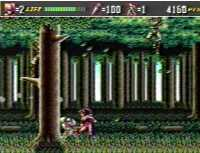

|


Review
Game Type: Side-view platform
You play a ninja who, for reasons lost to the mists of time, traverses
several stages causing random destruction.
Gameplay: 90/100
The martial arts platform game is all too common in video games, but a
well-done one is all too rare. Shinobi III has a great variety of moves
(shuriken throw, dash-n-slash, jump kicks, and more), but all are executed
by just two buttons and the control pad. While this means that on rare
occasion you'll intend to do one move and wind up doing a completely
different one, it also means you're never at a loss for which button to
push. The first stages should pose no problem for novices but it will take
a lot of skill if you intend to beat the game. No cheap hits; if you're
knocked off a ledge it's your own fault and you'll know it.
Graphics: 80/100
The attacks are flashy, the backgrounds have lots of parallax, and the
motion of the characters is very anime-inspired. I wish it were more
colorful, but this is the best you'll get from a Genesis.
Sound: 70/100
There's only one music track I really like, the rest is merely adequate.
Sound effects are pretty decent, with a few effectively placed voice samples
and the usual cast of high-pitched thuds.
Overall: 90/100
One of the few side-scrollers with as much finesse as a Street Fighter
game. It would have been outranked by Shinobi Legions in my book if it
weren't for Legions' damnable digitized graphics.
Codes
- Infinite Shurikens
- In the Options menu set the Sound to "Shuriken", the Music to "Shinobi",
and the Voice to "Shuriken Hit", then go to the Shurikens option and set it
to zero. Wait for a moment and it will change to an infinity symbol.
- Invincibility
- In the options screen go to the Music and play "He Runs", "Japonesque",
"Shinobi Walk", "Sakura", and "Getufu" in that order.
|